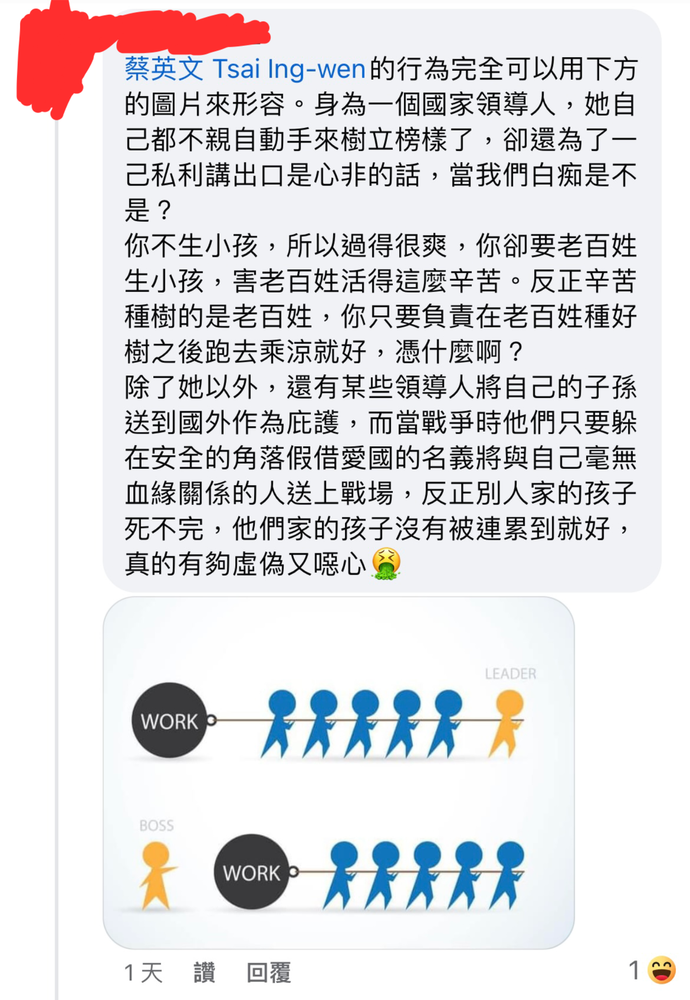
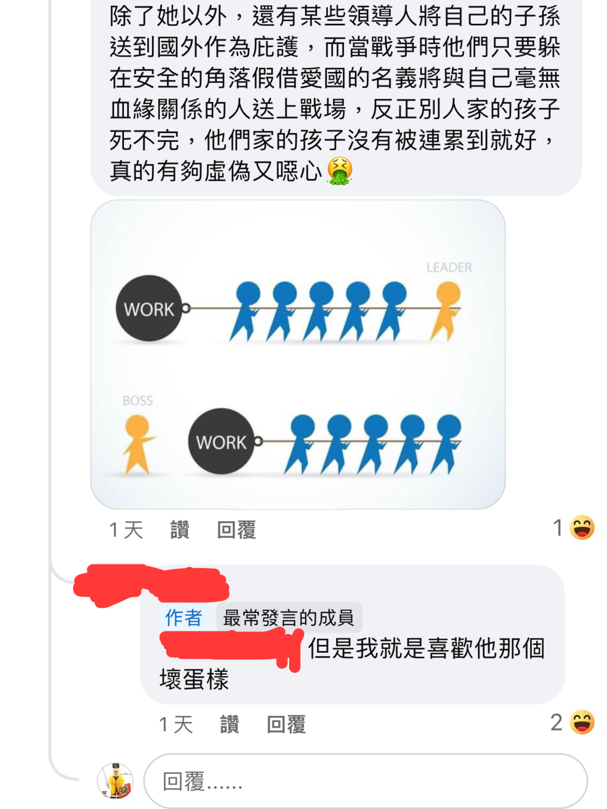

思維解構：死後審判、集體謊言與量子意識的邏輯思辨
⚖️ 專案開發者聲明：邏輯一致性審核
本專案並非針對任何特定的宗教或群體，而是針對所有「缺乏物理實相支撐」與「邏輯不通」的信仰系統進行解構。
身為開發者，我們深知一套系統若底層邏輯混亂，無論介面（儀式）多麼華麗，最終都將導致運行錯誤。本專案的宗旨如下：
- 無差別審計：無論是西方的亞伯拉罕諸教、印度的因果業力、歐洲的原始德魯伊，或是東方的神祕主義，皆平等接受科學與邏輯的 Debug。
- 拒絕迷信誤導：迷信本質上是古代樣本在資訊貧乏下所編寫的「邏輯補丁」。在現代科學與腦神經科學已高度發展的今天，繼續沿用這些過時、甚至有害的「舊版代碼」，只會阻礙人類對真實世界的認知。
- 回歸物理實相：我們尊重文學美感與心理撫慰價值，但堅決捍衛「事實歸事實，信仰歸信仰」的界線。不要讓數千年前的資訊謬誤，鎖死了你大腦的運算資源。
「本專案不提供心靈寄託，只提供實相數據。請保持理性，拒絕被任何未經校驗的迷信系統所誤導。」
前言：被恐嚇的童年
小時候，長輩總喜歡用一套粗暴的因果論來管教我們：「不可以說謊、不能欺負人、不要做不符合社會風氣的事，否則死後會下地獄受苦。」這種恐嚇式的道德綁架，幾乎成了每個人童年的集體陰影。然而，當我們長大並開始用理性和邏輯審視這個世界時，就會發現這套流傳千年的「死後審判機制」，在現實與邏輯上根本漏洞百出。
一、 翻開地府機制的「行政與跨國管轄權」災難
許多動漫和電影（如《與神同行》、《鬼灯的冷徹》）都熱衷於描繪死後世界如何井然有序地根據生前善惡進行審判。但如果這種機制存在於現實，邏輯立刻就會全面崩潰：
- 24小時無死角的老大哥監控： 這意味著全人類活著的每分每秒、甚至連大腦深處的「起心動念」都被記錄與讀取。這不僅是技術上的天文數字，更在基本人權上構成了嚴重的侵犯隱私罪嫌。
- 行政過載與地府塞車： 每個人一生做過的好壞事多如牛毛，審判過程必然極其冗長。面對全球每天龐大的死亡人口，地府難道不會早就爆滿？工作人員難道不用遵守勞基法、24小時不間斷看監視器都不用休息？
- 跨國管轄權的邏輯死結： 當世界打破國界，神話的 Bug 就浮現了。一個後天歸化他國或改變信仰的日本人，死後到底歸日本地獄管，還是西方地獄管？如果一個作惡多端的外國人，其信仰的宗教對死後審判極其寬鬆，而他卻能逃過嚴苛的日本地獄，這豈不是制度上的極大不公？
二、 利益鏈與文化相對主義的雙標
多數人肯定都聽過「做好事會上天堂」與「做壞事會下地獄」，但這兩者的界線從來都不是絕對的。在現實的生態與生物鏈中，多數時候我們的利益與享受，恰恰是建立在其他生命的苦難之上。
大廚煮出美食滿足饕客是善行，但為了提供食材，漁夫需要捕撈、畜牧業者必須宰殺。在《聖經》創世記中，上帝甚至明確表現出對亞伯牲畜祭品的喜愛，勝過該隱的農作物。這種骨牌效應下，何為善？何為惡？
道德與禁忌，往往只是出生地與文化形塑出的集體想像。
在某些保守文化中，女性在公開場合展露身材，以及不分男女在結婚之前就已發生性行為、觀看色情片、自慰等，均被視為滔天大罪，無數人出於對死後下地獄的恐懼而壓抑本能。然而現代醫學與生理學的客觀數據，徹底戳破了這套古代禁慾神話：
🔬 哈佛醫學審計：每月射精頻率與攝護腺癌相對風險（RR）跑分
哈佛大學公共衛生學院與權威醫學期刊《歐洲泌尿學》（European Urology）追蹤超過 31,925 名成年男性長達 18 年的旗艦流行病學研究明確證實：成年男性每月射精達 21 次以上者，相較於每月僅 4 至 7 次的低頻禁慾組，罹患攝護腺癌的風險顯著降低約 20% 至 31%。透過定期排空前列腺液，能加速前列腺上皮細胞代謝，有效防止微觀致癌晶體與發炎分泌物長期沉積。
* 數據來源：Rider JR, Wilson KM, Sinnott JA, et al. Ejaculation Frequency and Risk of Prostate Cancer: Updated Results with an Additional Decade of Follow-up. European Urology.
荒謬的是，那些連細胞生物學都一無所知的古代先知與神職階級，卻硬生生編造出「婚前禁慾、自慰下地獄」的教條。未婚個體若嚴格遵從教規徹底壓抑，在生理上反而是強迫前列腺長期處於高壓充血與代謝廢物沉積狀態，等於是拿自己真實肉體的病變與致癌風險，去兌換一張虛構的天堂門票。在做好安全防護與知情同意的前提下，自慰與多巴胺釋放本就是碳基生物維持身心健康的天然調節機制。結婚與否純屬人類社會演化出的集體契約，在客觀人體生化機制面前毫無神聖特權。在歐美地區甚至不乏在雙方同意下進行換妻活動的群體。當全身包裹的傳統女性指責穿比基尼的女性會下地獄時，對方正享受著大膽展露身材帶來的多巴胺快樂並回嗆：「你已經在地獄裡了！」

▲ 文化雙標圖解：身穿保守阿巴雅（Abaya）長袍的女性以神權教條指責海灘上穿著比基尼的女性「死後會下地獄」，對方則在享受陽光與多巴胺的同時犀利回擊「妳現在就已經身在地獄了」，生動呈現道德枷鎖與身體自主的荒謬落差。
🎬 影音批判與配樂說明：
- 影像素材：針對臉書粉專「令人戰慄的信仰」諷刺基督教將自慰打成下地獄之貼文截圖，透過 InShot 序列化剪輯而成的批判性輪播影片。
- 原創背景配樂：背景音樂為經典殭屍電影《殭屍先生》開頭「九叔與四目道長合力制伏跳動殭屍」之經典插曲，由本專案作者親自以鋼琴彈奏改編錄製，藉由符咒鎮壓行屍走肉的戲謔感，黑色幽默地反諷被恐嚇教條僵化心智的教徒群體。
🎬 田野實證：菜市場傳教騷擾與《英雄》鋼琴反諷：
- 荒謬實境記錄：市場攤販在工作時突遭傳教婦人以大聲公貼身騷擾，狂吼「婚前打砲會下地獄、看謎片自慰會下地獄、求耶穌原諒」。本專案作者將該公開素材物理留存，並親自製作中英雙字幕翻譯，將迷信群體對底層勞動者的精神污染轉化為可公開檢視的客觀樣本。
- 原創琴音對照：影片背景配樂為《超人力霸王奈克瑟斯》（Ultraman Nexus）經典主題曲〈英雄〉（Eiyuu）抒情版，由本專案作者親自彈奏錄製。以溫柔莊嚴的英雄守護旋律，反襯宗教狂熱者手持擴音器將正常生理需求妖魔化、自封道德法官的極度扭曲與荒唐。
🚼 反出生主義審計：生育背後的自私與隱私剝削
這種集體想像的雙標，在「生育觀念」上更展現出極致的撕裂。傳統體制和長輩常指責不生小孩的人自私、沒貢獻勞動力；但從反出生主義的角度來看，在未經個體同意下，強行將一個無辜的意識帶入充滿升學內卷、霸凌風險且司法保護失能的現實修羅場，這本質上才是一場不道德的侵略行為。
更虛偽的是現代社群媒體上的「母愛流量密碼」。許多父母宣稱生育是為了讓人生完整，卻在孩子出生後立刻為其建立社交帳號，毫無節制地公開孩子的成長隱私以滿足虛榮心。甚至有人生出有缺陷的小孩後，成立粉專公開販售孩子的苦難來博取社會同情，任由盲目的粉絲在底下留言「媽媽好偉大」來收割道德紅利。這種將孩子的痛苦轉化為自身光環的自私行為，在理性審計者眼中，簡直罪大惡極。這再度恰恰說明，道不道德純粹是極其主觀的東西，根本毫無標準答案。


▲ 社群實證解讀（苦難消費與集體自我感動）：截圖展示了家長將患有顱顏畸形的孩子日常生活高調放上社群網路，標榜「超級美麗的女孩」，吸引大量外人廉價留言「好偉大、好有愛」以洗刷道德存在感。反出生主義群組一針見血地指出：動動手指讚美的一方完全不需承擔任何代價，但孩子在真實世界中卻要用一生的時間去硬扛歧視目光、洗手間外的嘲弄與殘酷的霸凌現實。這種「以愛為名將孩子的身體缺陷當作公關貨幣」的行為，本質上是加害者對受害者的二度剝削。

▲ 法律維度審計（曬娃 Sharenting 的法律代價）：歐美多國司法體系已開始正視父母隨意公開未成年子女隱私的侵權本質。奧地利少女因父母擅自上傳其童年隱私照片憤而提告，法國法律更明定未經子女同意曬照最高可處重罰。這在法律層面粉碎了「孩子是父母附屬品」的傳統迷思，證明未經授權的隱私暴露，無論包裝得多麼溫情，皆構成實質的權利侵犯。
三、 人類社會：一場精緻的集體詐騙
長輩總說從事詐騙會下十八層地獄，但放眼望去，整個現代人類社會本質上就是一個極其複雜的詐騙與包裝系統，差別只在於「有沒有違法」罷了：
- 虛構的藝術：
小說家、編劇、遊戲開發者，他們的職業本質就是建立一個讓人沉浸其中的巨大謊言。 - 戰術與話術：
電競或技擊選手為了贏，必須使用假動作與伎倆欺騙對手；商人在客戶面前，必須說盡對方愛聽的話以拿下訂單。 - 生活中的「假面具」：
我們常常在生活中扮演口是心非的角色，例如你可能會客套地對因為上了年紀而容顏不再的朋友說：「外貌不重要，內在美才重要」但內心真正的潛台詞卻是：「外貌當然很重要，所以我才會去打玻尿酸來想辦法維持，這樣在拍集體照時我才會是照片中外貌最出眾的那位，而且我才不會讓任何人知道我有打玻尿酸。」
🚨 社會系統性 Glitch 觀測：人性不可試探
最近出現國小女老師在下班後兼職當詐騙集團車手的新聞。一個本該教書育人、當孩子範本的教育者，卻選擇成為禍害社會的敗類。這深刻說明了：外在的人品往往只是包裝出來的介面（Interface），但人性是絕對經不起試探的底層代碼。只要籌碼足夠、誘惑到位，人人都可能觸發作惡的邏輯。
這背後更投射出政府體制、司法無能以及就業市場薪資不公的連帶潰敗。基層教育人員每天為了照顧和應付那些屁孩而極度傷神，薪水卻微薄得可憐；相反地，投入詐騙卻能快速累積財富，且在現行法律體制下總是被輕判。在這種扭曲的系統反向激勵下，底層邏輯自然會導向更划算的錯誤路徑。甚至近年頻傳的虐童案，本質上也是這種勞動高壓、低度回報與體制失能相互擠壓下的結構性悲劇。

🛠️ 架構安全與合規性審計（Architecture & Compliance Log）：
- 依賴防禦與螢幕錄影（Screen Recording & Isolation）： 鑑於主流大眾媒體之 YouTube 串流多設有第三方網頁外嵌阻斷機制（Embedding Restrictions），導致 HTML 編輯器之 iframe 渲染失效。為克服此體制封鎖、防止非預期斷連（Link Rot），本處採用「螢幕錄影」技術路徑將該公開新聞片段進行物理留存，並轉譯為本地靜態資源（Static Assets）進行
<video>本機加載，以確保本思想專案之系統穩定度與獨立性。 - 合規審查（Fair Use Compliance）： 本處透過螢幕錄影所留存之實證樣本，純粹出於非營利之學術評論、地質實相、社會系統性 Glitch（政府失能、就業市場勞動報酬不公與人性代碼試探）之研究目的。一切引用行為均符合台灣《著作權法》第 52 條與第 65 條關於「正當目的之合理使用」規範，未侵害原著作之商業市場價值。
🏛️ 政治結構審計：世俗神權的道德包裝與成本轉嫁
※ 系統架構聲明：此處並非參與當代世俗黨派的口水政爭，而是將政治體制視為「另一種形態的世俗神權系統」——兩者本質相同，皆熱衷於編造虛幻的道德教條與愛國神話，藉此掩蓋底層資源分配不均與權力不對稱的物理實相。
這種集體詐騙與雙標，在國家政治機器的運作中展現得尤為露骨：
-
生育成本的制度性轉嫁（白嫖人口紅利）：
統治階級往往自身毋須承擔繁重的教養勞動，卻動用國家機器、打著「維持國家競爭力」的大義旗號，道德綁架底層百姓多生小孩。體制企圖在不改善低薪、高房價與高壓內卷環境的前提下，零成本收割新生代勞動力與稅收紅利；而盲目聽信宣傳投入生育的個體，則必須以數十年的個人青春與財務自由為代價，承擔整個社會體制的負外部性。
🎬 影音批判與原創弦樂配樂說明：
- 影像脈絡：將社群對國家領導人「自身不育卻全力鼓吹底層生育」之自私邏輯批判截圖，透過 InShot 序列化剪輯而成的輪播實證影片。
- 背景配樂：選用經典特攝《高斯奧特曼》（Ultraman Cosmos）主題曲〈Spirit〉，由本專案作者親自透過 Perfect Piano 的弦樂四重奏模式（String Quartet） 改編演奏錄製。以守護生命與慈愛為名的磅礡英雄旋律，反襯出政治體制剝削肉身生育紅利的極致虛偽。


▲ 社群實證解讀（無生殖主義觀點）：截圖揭示了底層清醒者對生育宣傳的精準解構——「領導人自己不生過得極其瀟灑，卻催促底層老百姓當生殖機器以提供韭菜與社會運作紅利」。評論區更一針見血戳穿權力階級的殘酷雙標：老百姓負責辛苦種樹，統治階層負責乘涼；一旦面臨戰爭危機，平民子弟被送上火線充當砲灰，權貴家族卻早已在海外構築安全退路。
-
意識形態的符號獵巫與虛擬內耗：
政客表面高喊崇高的愛國主義與道德價值，背地裡往往將資產與家族後路配置於海外避險。不論是民進黨、國民黨或民眾黨，各政治派系本質上都是在利益賽局中角逐權力資源的演員；然而，缺乏理性防火牆的底層老百姓，卻甘願被這些人造符號牽著鼻子走，在社群網路上以「青鳥」、「藍白草」等標籤瘋狂互相出征、人身攻擊，用自己的精神內耗替統治精英轉移了階級矛盾與體制失能的焦點。

▲ 政治階級後路與雙標實證：社群截圖詳列了政治人物高舉國族大義的背後，家族成員與子女卻普遍持有美籍護照、綠卡或海外資產的客觀清單。這種「嘴上教化老百姓抗爭或認同、肉身後代卻已在安全避風港著陸」的制度性背離，揭穿了意識形態動員的虛偽性——底層人民在互貼標籤、盲目出征中承擔戰爭與生存風險，而發號施令的統治精英卻早已買好了人生的境外退路。
🎬 影音批判解讀（執政精英的風險規避）：
批判執政黨最高領導者高喊抗敵大義，自身長子卻長期留美就業生子、手握海外安全退路；與此同時，國家機器卻修法延長兵役、動員基層年輕人備戰。這種「別人的孩子上火線充當防衛消耗品，權力者的直系血親在太平洋彼岸安居樂業」的強烈反差，是權力階層風險轉嫁的典型體現。
▲ 現代戰場與動員架構審計：外嵌影片從客觀物理角度撕開了政治宣傳的浪漫泡泡。現代戰爭是 FPV 自殺無人機、重砲覆蓋與絞肉機式的血腥消耗，毫無影視作品中的英雄主義；而動員體制的底層真相更殘酷地揭示了——當戰事爆發時，第一時間被推上前線承擔血肉橫飛代價的，永遠是既無資本、也無特權的底層青年。當代年輕人的「人間清醒」，正是看穿了這場由台前政客導演、卻由無辜肉身埋單的世俗祭旗狂歡。
換句話說，如果「說謊、雙標與偽善」就必須墮入無間地獄，那麼現代文明制度早已在不知不覺中，構築了一套規模最宏大、運轉最縝密的世俗地獄體系。
四、 鬼魂、輪迴，與微管量子意識
那麼，死後真的一無所有嗎？倒也未必。雖然歷史上的重大慘案（如南京大屠殺、猶太人遭屠殺）或現實中的悲劇（如新北國中割喉案、朱令鉈中毒事件），受害者死後都沒有顯靈找兇手報仇，這在物理層面證明了即使有鬼魂存在，祂們也無法干預物質世界的物理法則，因果報應往往只是活人的心理安慰。
然而，那些少數記得前世記憶、或是托夢破案的真實案例，卻又暗示著死亡或許不是終點。現代科學（如 Penrose 與 Hameroff 提出的 Orch-OR 理論）指出，意識並非由大腦本身產生，而是源於神經元內部的微管細胞（Microtubules）中的量子訊息。當心跳停止、身體機能死亡時，微管破裂，這些攜帶記憶與體驗的量子資訊並未消失，職司意識的數據只是散佈到宇宙之中。
可以肯定的是：死後根本沒有所謂的官僚審判機制。
結語：拒絕未經校驗的舊版代碼
綜上所述，所謂的「道德」與政治立場、宗教禁忌一樣，本質上都是因時因地而異的集體想像，根本沒有標準答案。長輩口中用來恐嚇管教的「下地獄說」，在邏輯與行政層面上完全是一個無法運行的偽命題。
如果未經同意將意識拉入卷王修羅場、剝削兒少隱私收割自我感動算作惡；如果為了生存戴上面具、在薪資與司法雙重失能的體制下趨利避害算說謊，那我們早就身處在人類一手打造的地獄系統中了。我們沒必要被古代資訊匱乏下編寫的「道德補丁」鎖死大腦的運算資源。如果死後有靈，它不過是一段回歸宇宙、重新編碼的自由量子數據；而在那之前，我們唯一能做的，就是看清這場集體詐騙的運作規則，在這個荒謬的現實中，清醒且不留遺憾地為自己活過一回。